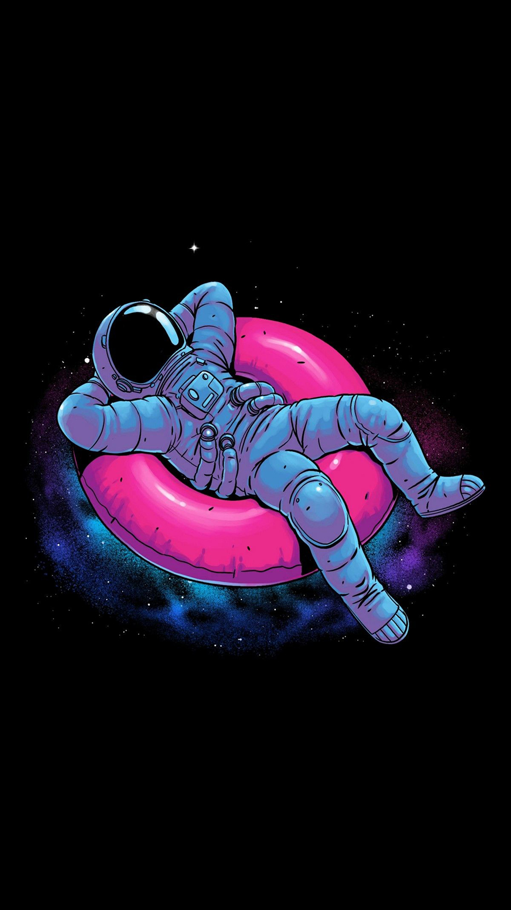

Apollo 15 lands near Shackleton Crater, where ice deposits are discovered. A few years later,
Jamestown Base and Zvezda Base are built and landed near the same crater. Apollo 22
is the second expedition to Jamestown. Apollo 24 (including Deke Slayton) is a crew
rotation mission to Jamestown that has
a S-IVB ignition failure. Apollo 25 is sent to repair the flight control computer of that stage.

Astronaut Audrey
The Cat in the Hat Knows a Lot About That! (2010–2019), TV series
The Cat in the Hat Knows a Lot About Space! (2017).